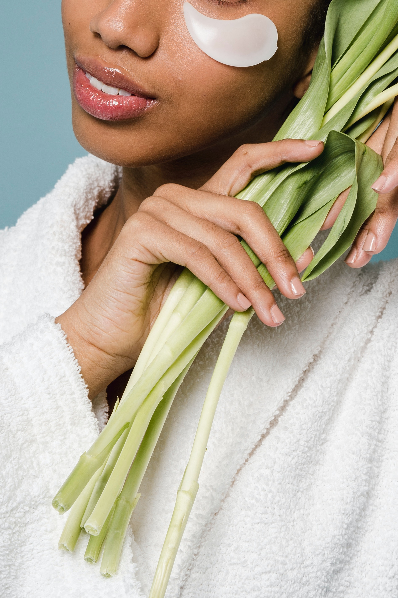
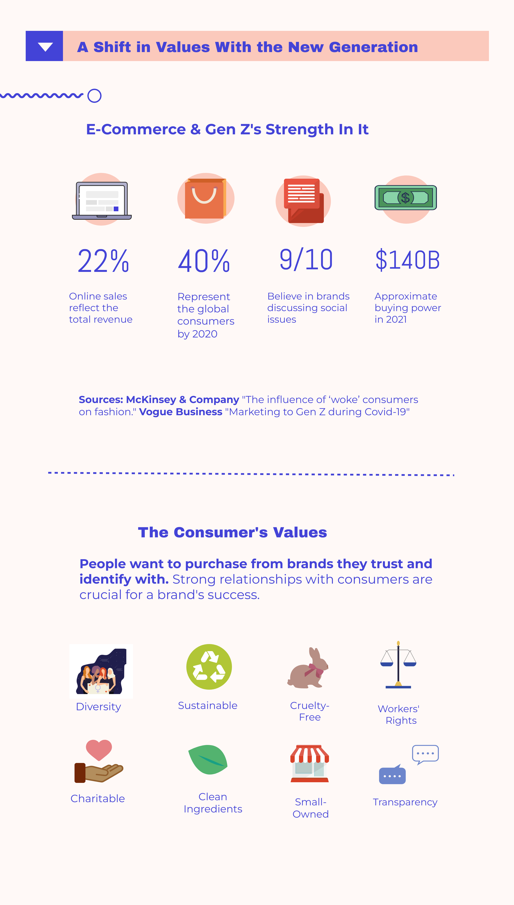
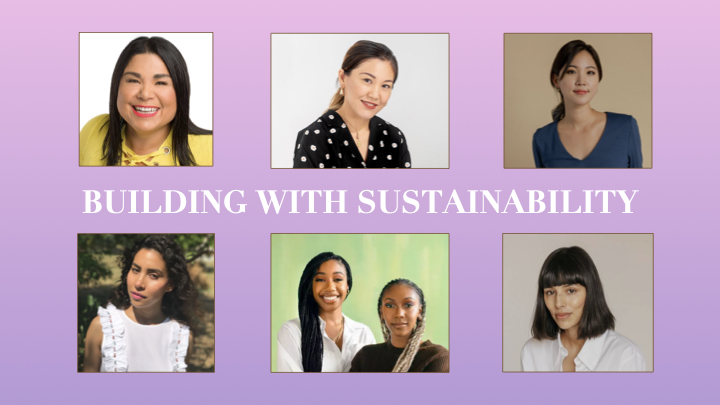

In 2020 the global beauty and personal care industry was valued at $483 billion, it's expected that in 2021 revenue will hit $511 billion. Part of that growth is also going to sustainable beauty brands that consumers want to see more of in this generation.
Social media is one of the driving factors that contribute to growth in the beauty market. In this digital age, brands are striving to create online campaigns and collaborate with content creators, especially in quarantine.
Influencer marketing leads to new customers and sales for businesses through the mentions of people with large online followings. People want to purchase from brands they trust and identify with. Strong relationships with consumers are crucial for a brand's success.
“
Though many industries are responsible for the onslaught of pollution, beauty in particular has been a major culprit: it generates 120 billion units of packaging each year.
”
Ryan Waddoups, Senior Editor of Surface Magazine
Though many industries are responsible for the onslaught of pollution, beauty in particular has been a major culprit: it generates 120 billion units of packaging each year, and around 95 percent of it gets thrown out after one use.
As search engines become filled with keywords like “natural,” “green,” and “clean,” a burning question starts to become more apparent. What do these terms even mean? What makes a product actually clean?
While there might be general baseline definitions online such as a product that’s free from toxic and artificial substances, “clean” can still be a bit vague and subjective. Plants used in cosmetics are natural but some brands may not consider it safe or clean enough depending on the extraction process used.
The FDA’s non-existent regulation of clean ingredients in cosmetics also makes the phrase a bit fuzzy to grasp. The federal government doesn’t label beauty products natural or clean, because these terms and standards haven’t been established by the FDA. Their fact sheet for small businesses and handmade cosmetics mentions this issue. “FDA has not defined the term “natural” and has not established a regulatory definition for this term in cosmetic labeling. FDA also does not have regulations for the term "organic" for cosmetics.”

Additionally, the misinformation that circulates among these circles also complicates things a bit further. With no strong definition from the federal government, this allows clean beauty to have it’s own nuances and levels that differs from business to business.
For example in the summer of 2018 “Clean at Sephora” launched as an on-going curation of brands that are non-toxic for people. This criteria is based on a list of over 40 ingredients that are either completely excluded or have a restricted amount in a product. Various unwanted chemicals include sulfates, talc, mineral oil, phthalates, and so on. This list receives occasional updates as more controversial ingredients are added.
If brands can faithfully comply with these expectations, their product will receive a green badge that signifies this prestigious grade for conscious shoppers. The Sephora website states, “When you see our Clean seal, you can be assured that the product is formulated without specific ingredients that are known or suspected to be potentially harmful to human health and/or the environment.”
Beauty entrepreneur, Laney Crowell is also part of this push for natural products especially among makeup wearers, an area that she feels has been left out of the clean conversation unlike skincare. Since 2019, Laney has been operating her indie business, Saie, with the goal of creating makeup that looks good while also delivering quality ingredients that won’t harm your skin. She firmly believes that you shouldn’t have to make a compromise between good makeup or good ingredients to look your best. As mentioned in her founder’s story on the brand’s website, “Saie was designed to prove to women everywhere that makeup can be clean, chic and unforgettable.”
This type of accountability is what many consumers want from the businesses they shop at. People want to see genuine initiatives and progress over perfection. Certifications that consistently keep businesses responsible for their environmental impact are becoming more widespread like the Leaping Bunny, Climate Neutral, Plastic Negative, and 1% for the Planet.

Infographic created by Fatima Coulibaly via Piktochart
Lauren offers insight on the brand’s efforts to reduce its carbon footprint. “Sustainable packaging is such a clear decision as to why we should be more conscious. We try to make sure that everything we use is biodegradable to some extent or compostable.”
Meet These 6 WOC Entrepreners Who Are Trailblazing Clean Beauty

Approximately valued at $5.4 billion in 2020, the clean beauty sector is projected to reach $11.6 billion in 2027, as stated by Li Lu, a senior researcher at Glossy. As a whole, global beauty is worth $511 billion in 2021. Combined together skincare, makeup, and fragrance it’s expected to exceed $784.6 billion in 2027. New methods in e-commerce, social media and influencers, and digital marketing makes it much easier for sales to increase in this sector.
This project was created for a class assignment at The New School. It went through development from a previous project, known as "Waste In The Beauty Industry." My old project focused on the beauty industry and how it relates to the environment including topics on e-commerce and sustainable businesses.